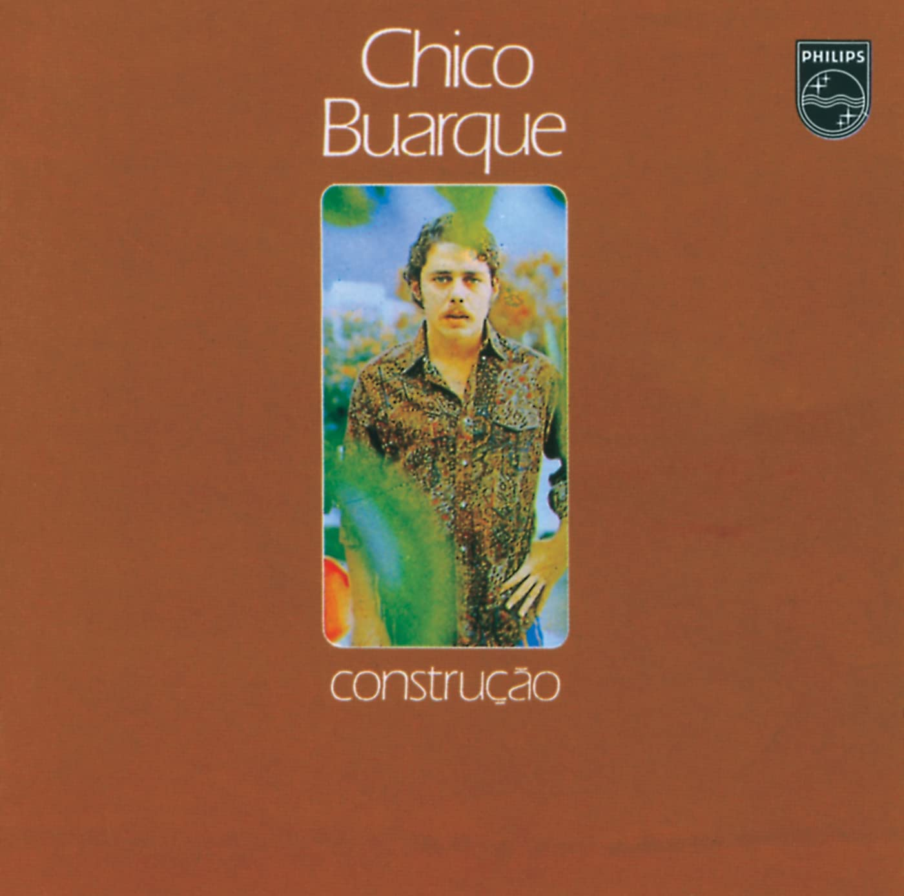

Construção (1971)
Chico Buarque
00:06
For this bread to eat, for this floor to sleep on
Por esse pão pra comer, por esse chão pra dormir
00:13
The certificate to be born, and the concession to smile
A certidão pra nascer, e a concessão pra sorrir
00:19
For letting me breathe, for letting me exist
Por me deixar respirar, por me deixar existir
00:24
May God pay you back
Deus lhe pague
00:34
For the pleasure of crying and for the "we're here for you"
Pelo prazer de chorar e pelo "estamos aí"
00:40
For the bar jokes and for the football to cheer to
Pela piada no bar e o futebol pra aplaudir
00:47
A crime to talk about and a samba to get distracted
Um crime pra comentar e um samba pra distrair
00:51
May God pay you back
Deus lhe pague
00:59
For this beach, this skirt, the women from here
Por essa praia, essa saia, pelas mulheres daqui
01:06
Shoddily made love, shave your beard and go
O amor malfeito depressa, fazer a barba e partir
01:12
For the beautiful Sunday, soap opera, mass and comic books
Pelo domingo que é lindo, novela, missa e gibi
01:18
May God pay you back
Deus lhe pague
01:26
For the free cachaça we have to swallow
Pela cachaça de graça que a gente tem que engolir
01:33
For the smoke and disgrace we have to cough down
Pela fumaça, desgraça, que a gente tem que tossir
01:39
For the hanging scaffoldings we have to fall from
Pelos andaimes pingentes que a gente tem que cair
01:44
May God pay you back
Deus lhe pague
01:52
For one more day, one more agony to withstand and watch
Por mais um dia, agonia, pra suportar e assistir
01:59
For the grinding of teeth, for the buzz of the city
Pelo rangido dos dentes, pela cidade a zunir
02:05
And for the demented cry that helps us flee
E pelo grito demente que nos ajuda a fugir
02:10
May God pay you back
Deus lhe pague
02:17
For the wailer woman that praises and spits on us
Pela mulher carpideira pra nos louvar e cuspir
02:25
And for the botflies that kiss us and cover us
E pelas mosca bicheiras a nos beijar e cobrir
02:32
And for the ultimate peace that will finally redeem us
E pela paz derradeira que enfim vai nos redimir
02:37
May God pay you back
Deus lhe pague
03:02
May God pay you back
Deus lhe pague
00:14
Everyday she does everything just the same
Todo dia ela faz tudo sempre igual
00:17
Shakes me up at six in the morning
Me sacode às seis horas da manhã
00:20
Smiles me a punctual smile
Me sorri um sorriso pontual
00:22
And kisses me with her minty mouth
E me beija com a boca de hortelã
00:28
Everyday she tells me to be careful
Todo dia ela diz que é pra eu me cuidar
00:30
And those things all women say
E essas coisas que diz toda mulher
00:33
Says she's waiting on me for dinner
Diz que está me esperando pro jantar
00:36
And kisses me with her coffee mouth
E me beija com a boca de café
00:41
Everyday I just think about stopping
Todo dia eu só penso em poder parar
00:44
At noon I just think of saying no
Meio-dia eu só penso em dizer não
00:46
Then I think of the life that I have
Depois penso na vida pra levar
00:49
And shut my mouth full of beans
E me calo com a boca de feijão
00:55
Six in the afternoon, as was to be expected
Seis da tarde, como era de se esperar
00:57
She goes and waits for me by the gate
Ela pega e me espera no portão
00:59
Tells me she's been crazy to kiss me
Diz que está muito louca pra beijar
01:02
And kisses me with a mouth of passion
E me beija com a boca de paixão
01:05
Everyday she tells me not to go away
Toda noite ela diz pra eu não me afastar
01:08
At midnight she swears eternal love
Meia-noite ela jura eterno amor
01:10
And holds me tight as to nearly suffocate me
E me aperta pra eu quase sufocar
01:13
And bites me with a mouth of fear
E me morde com a boca de pavor
01:16
Everyday she does everything just the same
Todo dia ela faz tudo sempre igual
01:18
Shakes me up at six in the morning
Me sacode às seis horas da manhã
01:21
Smiles me a punctual smile
Me sorri um sorriso pontual
01:24
And kisses me with her minty mouth
E me beija com a boca de hortelã
01:29
Everyday she tells me to be careful
Todo dia ela diz que é pra eu me cuidar
01:32
And those things all women say
E essas coisas que diz toda mulher
01:34
Says she's waiting on me for dinner
Diz que está me esperando pro jantar
01:37
And kisses me with her coffee mouth
E me beija com a boca de café
01:43
Everyday I just think about stopping
Todo dia eu só penso em poder parar
01:46
At noon I just think of saying no
Meio-dia eu só penso em dizer não
01:48
Then I think of the life that I have
Depois penso na vida pra levar
01:50
And shut my mouth full of beans
E me calo com a boca de feijão
01:56
Six in the afternoon, as was to be expected
Seis da tarde, como era de se esperar
01:59
She goes and waits for me by the gate
Ela pega e me espera no portão
02:01
Tells me she's been crazy to kiss me
Diz que está muito louca pra beijar
02:04
And kisses me with a mouth of passion
E me beija com a boca de paixão
02:07
Everyday she tells me not to go away
Toda noite ela diz pra eu não me afastar
02:09
At midnight she swears eternal love
Meia-noite ela jura eterno amor
02:12
And holds me tight as to nearly suffocate me
E me aperta pra eu quase sufocar
02:15
And bites me with a mouth of fear
E me morde com a boca de pavor
02:17
Everyday she does everything just the same
Todo dia ela faz tudo sempre igual
02:20
Shakes me up at six in the morning
Me sacode às seis horas da manhã
02:22
Smiles me a punctual smile
Me sorri um sorriso pontual
02:25
And kisses me with her minty mouth
E me beija com a boca de hortelã
00:14
Yes, go and tell, tell this
Sim, vai e diz, diz assim
00:23
That I cried, that I died
Que eu chorei, que eu morri
00:31
Of regret
De arrependimento
00:34
That my dismay
Que o meu desalento
00:38
Is endless
Já não tem mais fim
00:43
Go and tell, tell this
Vai e diz, diz assim
00:49
How unhappy I am
Como sou infeliz
00:57
With my mistake
No meu descaminho
00:59
Say that I'm alone
Diz que estou sozinho
01:04
And don't know myself
E sem saber de mim
01:09
Tell that I was close
Diz que eu estive por pouco
01:15
Tell her I'm dying to forgive her
Diz a ela que eu estou louco pra perdoar
01:24
That however it is, be it by love
Que seja lá como for, por amor
01:31
Or as a favour, she should come back
Por favor, é pra ela voltar, sim
01:39
Yes, go and tell, tell this
Sim, vai e diz, diga assim
01:46
That I screwed up, that I drank
Que eu rodei, que eu bebi
01:49
That I fell, that I don't know
Que eu caí, que eu não sei
01:52
That all I know is I'm tired
Que eu só sei que cansei, enfim
01:55
Of my misfortunes
Dos meus desencontros
01:58
Run and go tell her
Corre e diz a ela
02:01
That I surrender
Que eu entrego os pontos
00:04
Loved that time as if it were the last one
Amou daquela vez como se fosse a última
00:12
Kissed his wife as if she were the last one
Beijou sua mulher como se fosse a última
00:20
And each of his children as if they were the last ones
E cada filho seu como se fosse o único
00:24
And crossed the street with his timid step
E atravessou a rua com seu passo tímido
00:31
Climbed up the construction site as if he were a machine
Subiu a construção como se fosse máquina
00:39
Raised up on the landing four solid walls
Ergueu no patamar quatro paredes sólidas
00:46
Brick by brick in a magical design
Tijolo com tijolo num desenho mágico
00:50
His eyes blunt with cement and tears
Seus olhos embotados de cimento e lágrima
00:58
Sat to rest as if it were Saturday
Sentou pra descansar como se fosse sábado
01:05
Ate rice and beans as if he were a prince
Comeu feijão com arroz como se fosse um príncipe
01:13
Drank and hiccuped as if he were a castaway
Bebeu e soluçou como se fosse um náufrago
01:17
Danced and laughed as if listening to music
Dançou e gargalhou como se ouvisse música
01:24
And tripped on the sky as if he were a drunkard
E tropeçou no céu como se fosse um bêbado
01:32
And floated in the air as if he were a bird
E flutuou no ar como se fosse um pássaro
01:40
And ended up on the floor like a flaccid package
E se acabou no chão feito um pacote flácido
01:44
Agonized in the middle of the public sidewalk
Agonizou no meio do passeio público
01:51
Died on the wrong way blocking up the traffic
Morreu na contramão atrapalhando o tráfego
02:06
(Loved that time) as if he were the last one
(Amou daquela vez) como se fosse o último
02:14
(Kissed his wife) as if she were the only one
(Beijou sua mulher) como se fosse a única
02:21
(And each of his children) as if they were the prodigal
(E cada filho seu) como se fosse o pródigo
02:25
And crossed the street with his drunken step
E atravessou a rua com seu passo bêbado
02:33
Climbed up the construction site as if it were solid
Subiu a construção como se fosse sólido
02:40
Raised up on the landing four magical walls
Ergueu no patamar quatro paredes mágicas
02:48
Brick by brick in a logical design
Tijolo com tijolo num desenho lógico
02:52
His eyes blunt with cement and traffic
Seus olhos embotados de cimento e tráfego
02:59
Sat to rest as if he were a prince
Sentou pra descansar como se fosse um príncipe
03:07
Ate rice and beans as if he were the best
Comeu feijão com arroz como se fosse o máximo
03:14
Drank and hiccuped as if he were a machine
Bebeu e soluçou como se fosse máquina
03:18
Danced and laughed as if he were the next one
Dançou e gargalhou como se fosse o próximo
03:25
And tripped on the sky as if listening to music
E tropeçou no céu como se ouvisse música
03:33
And floated on the air as if it were a Saturday
E flutuou no ar como se fosse sábado
03:41
And ended up on the floor like a timid package
E se acabou no chão feito um pacote tímido
03:44
Agonized in the middle of the castaway sidewalk
Agonizou no meio do passeio náufrago
03:52
Died on the wrong hand blocking up the public
Morreu na contramão atrapalhando o público
04:07
Loved that time as if he were a machine
Amou daquela vez como se fosse máquina
04:11
Kissed his wife as if it was only logical
Beijou sua mulher como se fosse lógico
04:14
Raised up on the landing four flaccid walls
Ergueu no patamar quatro paredes flácidas
04:18
Sat to rest as if he were a bird
Sentou pra descansar como se fosse um pássaro
04:22
And floated in the air as if he were a prince
E flutuou no ar como se fosse um príncipe
04:25
And ended up on the floor like a drunken package
E se acabou no chão feito um pacote bêbado
04:33
Died on the wrong way blocking up the Saturday
Morreu na contramão atrapalhando o sábado
04:51
For this bread to eat, for this floor to sleep on
Por esse pão pra comer, por esse chão pra dormir
04:58
The certificate to be born, and the concession to smile
A certidão pra nascer e a concessão pra sorrir
05:05
For letting me breathe, for letting me exist
Por me deixar respirar, por me deixar existir
05:10
May God pay you back
Deus lhe pague
05:20
For the free cachaça we have to swallow
Pela cachaça de graça que a gente tem que engolir
05:27
For the smoke and disgrace we have to cough down
Pela fumaça, desgraça que a gente tem que tossir
05:34
For the hanging scaffoldings we have to fall from
Pelos andaimes pingentes que a gente tem que cair
05:39
May God pay you back
Deus lhe pague
05:48
For the wailer woman that praises and spits on us
Pela mulher carpinteira pra nos louvar e cuspir
05:55
And for the botflies that kiss us and cover us
E pelas moscas bicheiras a nos beijar e cobrir
06:03
And for the ultimate peace that will finally redeem us
E pela paz derradeira que enfim vai nos redimir
06:07
May God pay you back
Deus lhe pague
00:12
No one
Ninguém
00:14
No one will hold me back
Ninguém vai me segurar
00:16
No one will close down
Ninguém há de me fechar
00:19
The doors of my heart
As portas do coração
00:24
No one
Ninguém
00:26
No one will have me
Ninguém vai me sujeitar
00:29
Lock up, in my chest, my
A trancar no peito a minha
00:34
Passion
Paixão
00:36
I won't, I won't despair
Eu não, eu não vou desesperar
00:41
I won't renounce
Eu não vou renunciar
00:45
Flee
Fugir
00:50
No one
Ninguém
00:52
No one will chain me down
Ninguém vai me acorrentar
00:54
While I can still sing
Enquanto eu puder cantar
00:57
While I can still smile
Enquanto eu puder sorrir
01:03
No one
Ninguém
01:04
No one will see me suffer
Ninguém vai me ver sofrer
01:07
No one will surprise me
Ninguém vai me surpreender
01:10
On the night of solitude
Na noite da solidão
01:15
For those
Pois quem
01:17
That have nothing to lose
Tiver nada pra perder
01:20
Will form with me an immense
Vai formar comigo o imenso
01:26
Line
Cordão
01:27
Then I want to see the mess
E então quero ver o vendaval
01:32
I want to see the Carnaval
Quero ver o carnaval
01:38
Happen
Sair
01:40
No one
Ninguém
01:43
No one will chain me down
Ninguém vai me acorrentar
01:45
While I can still sing
Enquanto eu puder cantar
01:48
While I can still smile
Enquanto eu puder sorrir
01:53
While I can still sing
Enquanto eu puder cantar
01:55
Someone will have to hear me
Alguém vai ter que me ouvir
02:00
While I can still sing
Enquanto eu puder cantar
02:01
While I can still follow
Enquanto eu puder seguir
02:05
While I can still sing
Enquanto eu puder cantar
02:07
While I can still smile
Enquanto eu puder sorrir
02:11
While I can still sing
Enquanto eu puder cantar
02:14
While I can still...
Enquanto eu puder...
00:24
Look, Maria
Olha, Maria
00:27
I well wanted to
Eu bem te queria
00:30
Make you a prey
Fazer uma presa
00:34
Of my poetry
Da minha poesia
00:37
But today, Maria
Mas hoje, Maria
00:40
To my surprise
Pra minha surpresa
00:43
To my sorrow
Pra minha tristeza
00:46
You must depart
Precisas partir
00:51
Go, Maria
Parte, Maria
00:54
For you're so beautiful
Que estás tão bonita
00:57
For you're so anxious
Que estás tão aflita
01:00
To abandon me
Pra me abandonar
01:05
I feel, Maria
Sinto, Maria
01:08
That you're only visiting
Que estás de visita
01:12
Your body shakes
Teu corpo se agita
01:15
Wanting to dance
Querendo dançar
01:19
Go, Maria
Parte, Maria
01:22
For you're all nude
Que estás toda nua
01:26
For the moon calls you
Que a lua te chama
01:30
For you're so womanly
Que estás tão mulher
01:33
Burn, Maria
Arde, Maria
01:36
In the flame of the moon
Na chama da lua
01:39
Gypsy Maria
Maria cigana
01:43
Tide Maria
Maria maré
01:48
Leave singing
Parte cantando
01:52
Fleeing Maria
Maria fugindo
01:55
Against the wind
Contra a ventania
01:58
Playing, sleeping
Brincando, dormindo
02:02
On a mountain bed
Num colo de serra
02:05
On an empty field
Num campo vazio
02:09
On a riverbed
Num leito de rio
02:12
In the arms of the sea
Nos braços do mar
02:16
Go, cheer up
Vai, alegria
02:19
For life, Maria
Que a vida, Maria
02:23
Lasts no more than a day
Não passa de um dia
02:26
I won't hold you down
Não vou te prender
02:30
Run, Maria
Corre, Maria
02:33
For life doesn't wait
Que a vida não espera
02:37
It's a spring
É uma primavera
02:41
You can't miss out on
Não podes perder
02:44
Go, Maria
Anda, Maria
02:49
For I'd only have
Pois eu só teria
02:52
My agony
A minha agonia
02:56
To offer you
Pra te oferecer
03:02
Go, Maria
Anda, Maria
03:05
For I'd only have
Pois eu só teria
03:09
My agony
A minha agonia
03:13
To offer you
Pra te oferecer
00:33
Go, brother
Vai, meu irmão
00:36
Catch this plane
Pega esse avião
00:39
You're in the right
Você tem razão
00:41
To run like this from this cold
De correr assim desse frio
00:45
But kiss my Rio de Janeiro
Mas beija meu Rio de Janeiro
00:48
Before an adventurer
Antes que um aventureiro
00:50
Takes a hold of it
Lance mão
00:52
Ask for forgiveness
Pede perdão
00:56
For the duration of this season
Pela duração dessa temporada
01:00
But don't say anything about how you saw me crying
Mas não diga nada que me viu chorando
01:04
And tell the tough guys I've been carrying on fine
E pros da pesada diz que eu vou levando
01:09
See how that lazy life's been going
Vê como é que anda aquela vida à toa
01:14
And if you can give me some good news
E se puder me manda uma notícia boa
01:18
Go, brother
Vai, meu irmão
01:21
Catch this plane
Pega esse avião
01:23
You're in the right
Você tem razão
01:26
To run like this from this cold
De correr assim desse frio
01:30
But kiss my Rio de Janeiro
Mas beija meu Rio de Janeiro
01:33
Before an adventurer
Antes que um aventureiro
01:35
Takes a hold of it
Lance mão
01:36
Ask for forgiveness
Pede perdão
01:40
For the duration of this season
Pela duração dessa temporada
01:45
But don't say anything about how you saw me crying
Mas não diga nada que me viu chorando
01:49
And tell the tough guys I've been carrying on fine
E pros da pesada diz que eu vou levando
01:53
See how that lazy life's been going
Vê como é que anda aquela vida à toa
01:59
And if you can give me some good news
E se puder me manda uma notícia boa
02:03
Go, brother
Vai, meu irmão
02:06
Catch this plane
Pega esse avião
02:08
You're in the right
Você tem razão
02:11
But don't say anything about how you saw me crying
Olha não diga nada que me viu chorando
02:16
And tell the tough guys I've been carrying on fine
E pros da pesada diz que eu vou levando
02:19
Ask for forgiveness
Pede perdão
02:22
For the duration of this season
Pela duração dessa temporada
02:27
See how that lazy life's been going
Pra ver como é que anda aquela vida à toa
02:32
And if you can give me some good news
E se puder me manda uma notícia boa
00:15
One day he arrived home so differently
Um dia ele chegou tão diferente
00:18
From his way of usually arriving
Do seu jeito de sempre chegar
00:23
Looked at her in a much warmer way
Olhou-a de um jeito muito mais quente
00:26
Than how he usually did
Do que sempre costumava olhar
00:30
And didn't curse at life as much
E não maldisse a vida tanto
00:33
As he did usually when he talked
Quanto era seu jeito de sempre falar
00:38
Neither left her alone in a corner
E nem deixou-a só num canto
00:40
To her great surprise invited her to dance
Pra seu grande espanto convidou-a pra rodar
00:47
And so she made herself beautiful
E então ela se fez bonita
00:50
In a way she hadn't dared to for so long
Como há muito tempo não queria ousar
00:54
With her low-cut dress
Com seu vestido decotado
00:57
Smelling musty from waiting so long
Cheirando a guardado de tanto esperar
01:01
Then the two locked arms
Depois os dois deram-se os braços
01:04
In a way they hadn't for so long
Como há muito tempo não se usava dar
01:08
And full of tenderness and joy
E cheios de ternura e graça
01:11
They went to the square and began to hug
Foram para a praça e começaram a se abraçar
01:17
And there they danced so many dances
E ali dançaram tanta dança
01:20
That the whole neighbourhood awoke
Que a vizinhança toda despertou
01:25
And there was so much happiness
E foi tanta felicidade
01:27
That the entire city lit up
Que toda cidade se iluminou
01:31
And there were so many crazed kisses
E foram tantos beijos loucos
01:34
So many hoarse cries like weren't heard anymore
Tantos gritos roucos como não se ouvia mais
01:40
That the whole world understood it
Que o mundo compreendeu
01:44
And the next morning came in peace
E o dia amanheceu em paz
00:00
He came without much talk, without much explanation
Ele vinha sem muita conversa, sem muito explicar
00:07
I just now that he spoke off and smelled off and liked the sea
Eu só sei que falava e cheirava e gostava de mar
00:14
I know he had tattoos on his arms and gold on his teeth
Sei que tinha tatuagem no braço e dourado no dente
00:22
And that my mom madly gave herself to him
E minha mãe se entregou a esse homem perdidamente
00:33
And the same way he came, he left, we don't know where to
Ele assim como veio partiu não se sabe pra onde
00:39
Leaving my mom with her gaze growing more distant by the day
E deixou minha mãe com o olhar cada dia mais longe
00:46
Waiting, frozen, glued to the pier by the sea
Esperando, parada, pregada na pedra do porto
00:54
With her only old dress growing shorter by the day
Com seu único velho vestido cada dia mais curto
01:04
When at last I was born, my mom wrapped me in a mantle
Quando enfim eu nasci minha mãe embrulhou-me num manto
01:11
Dressed me as if I were some kind of saint
Me vestiu como se eu fosse assim uma espécie de santo
01:18
But since she remembered no lullabies, the poor woman
Mas por não se lembrar de acalantos, a pobre mulher
01:25
Lulled me to sleep by singing cabaret shanties
Me ninava cantando cantigas de cabaré
01:36
My mom didn't delay in alerting the whole neighbourhood
Minha mãe não tardou a alertar toda a vizinhança
01:44
Showing that in me there was much more than a simple child
A mostrar que ali estava bem mais que uma simples criança
01:51
And I don't really know if by irony, or by love
E não sei bem se por ironia ou se por amor
01:57
She decided to give me the name of our Lord
Resolveu me chamar com o nome do Nosso Senhor
02:08
My story is this name that to this day I still carry with me
Minha história é esse nome que ainda hoje carrego comigo
02:15
When I go bar to bar, I turn the tables, yell, drink, fight
Quando vou bar em bar, viro a mesa, berro, bebo e brigo
02:23
The thieves and lovers, my colleagues of mug and cross
Os ladrões e as amantes, meus colegas de copo e de cruz
02:30
Know me only by my name: Boy Jesus
Me conhecem só pelo meu nome Menino Jesus
02:37
The thieves and lovers, my colleagues of mug and cross
Os ladrões e as amantes, meus colegas de copo e de cruz
02:44
Know me only by my name: Boy Jesus
Me conhecem só pelo meu nome Menino Jesus
00:12
Sleep, little one
Dorme minha pequena
00:17
It's not worth waking up
Não vale a pena despertar
00:26
Sleep, little one
Dorme minha pequena
00:31
It's not worth waking up
Não vale a pena despertar
00:38
I'll leave
Eu vou sair
00:42
Go out and about
Por aí afora
00:46
Behind an aurora
Atrás da aurora
00:51
Most serene
Mais serena
00:54
Sleep, little one
Dorme minha pequena
00:58
It's not worth waking up
Não vale a pena despertar
01:22
Sleep, little one
Dorme minha pequena
01:27
It's not worth waking up
Não vale a pena despertar